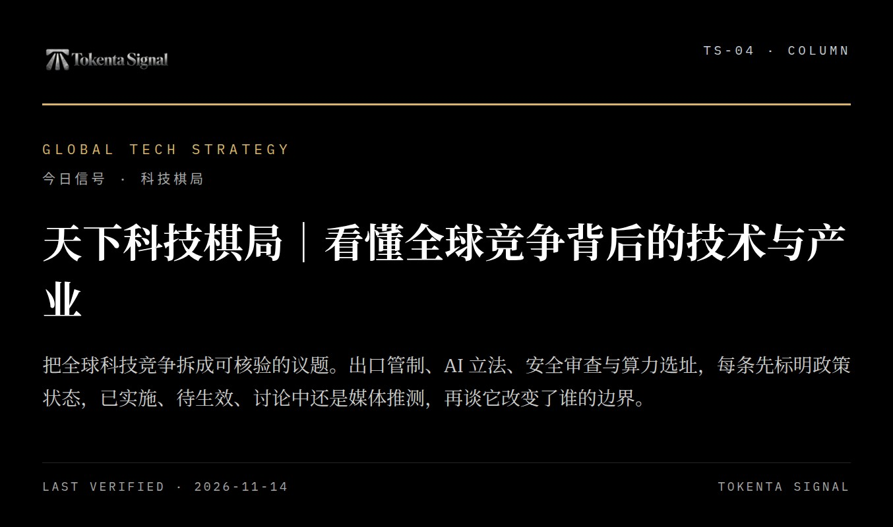
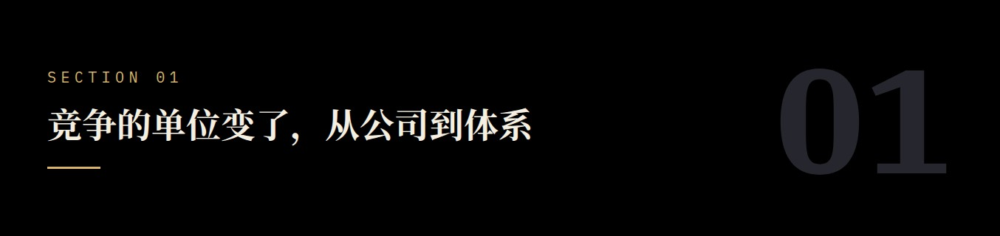
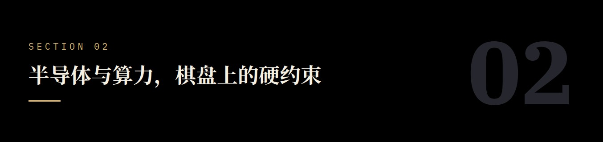
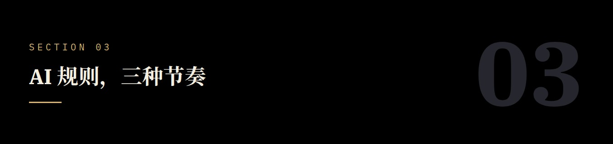
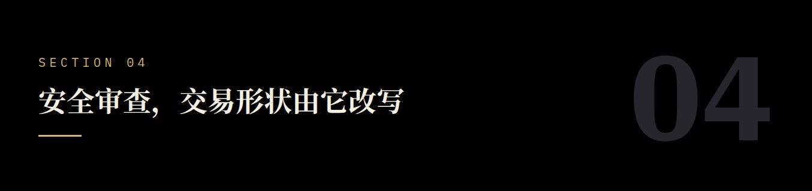
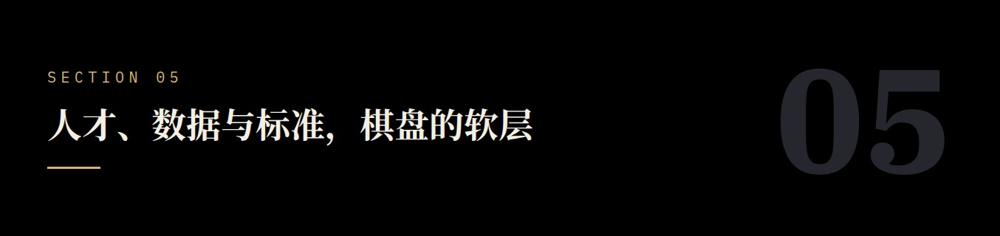

一家公司发布新模型，股价先动的是电力公司。一座数据中心选址，表决权在县级委员会手里。一笔机器人收购谈了 53.75 亿美元，最后改写交易形状的是安全审查。这个栏目要看的，就是这类发生在公司之外的决定。它们来自规则、供应链、能源与人才分布，单个公司无法左右，却决定每家公司的活动边界。
科技棋局只做一件事，把全球科技竞争拆成可核验的议题。每个议题先确认状态，再谈影响。政策分四种状态记录，已实施，已签署待生效，已提议或讨论中，媒体推测。状态没有确认之前，栏目不把传闻写成结论。读者在这里得到的，是一张持续更新的竞争地图，以及判断每条新消息应该放在哪一格的方法。

过去看科技竞争，主要看公司财报与产品发布。现在多了一层变量。芯片能不能买到，取决于出口许可。模型能不能上线，取决于注册与安全框架。数据中心能不能建成，取决于电网容量与地方许可。人才流向哪里，取决于签证、科研资助与实验室分布。公司仍然是棋手，棋盘却由各国政府、电网运营商、标准组织与大学共同搭建。
这种变化对判断方式提出了要求。听到一条政策消息，第一步是查它处在哪个阶段。已经写入法规并开始执行的规则，会直接改变成本与时间表。还在提案阶段的规则，影响的是预期与布局，落地时间和最终文本都可能变化。把四个阶段混在一起谈，是科技政策报道里最常见的误差来源。本栏目每张卡片都把状态单独列出，原因在这里。

半导体供应链是全球化分工最深的产业，也是管制最先落下的地方。设计、制造、封装与设备分别落在不同国家和地区，任何一环的许可变化都会沿链条传导。美国商务部工业与安全局的先进计算出口管制从 2022 年 10 月起实施，2023 年 10 月强化，之后又多次澄清。它的作用方式是许可证制度，列入管制清单的芯片与制造设备，出口到特定目的地需要事先获批。
算力的另一头是电。训练规模继续扩大之后，数据中心的约束从芯片数量扩展到电网接入与地方审批。SpaceX 计划投资超过 740 亿美元建两座 AI 超算园区，亚利桑那园区设计容量最高 6 吉瓦，得州 Starbase 市委员会定于 12 月 9 日审议财产税减免，亚利桑那州科奇斯县的公开听证会只定了 12 月，日期未定。740 亿美元是公司自己的规划数字，园区尚未获批。纽约州则在另一个方向动作，州长行政令暂停新的超大规模数据中心州级环境许可最长一年，先建监管框架。两个案例方向相反，说明同一件事，算力扩张已经进入地方治理的议程。
美国先进计算与半导体出口管制
议题 先进计算芯片、超算最终用途与半导体制造设备的出口许可
当前状态 已实施。2022 年 10 月 7 日首批管制生效，2023 年 10 月 17 日两项临时最终规则强化，2024 年发布澄清规则
关键事实 BIS 官方说明称，管制意在限制特定国家购买先进计算芯片与制造先进芯片的能力，相关物项出口需要许可证，最终用于本土半导体制造设备的零部件同样需要许可
涉及方 美国商务部工业与安全局，芯片设计与制造企业，半导体设备厂商，云服务商
后续观察点 2025 年 1 月公布的 AI 扩散规则已于 2025 年 5 月被宣布撤销且不予执行，替代规则截至 2026 年 11 月 14 日尚未见正式发布，后续以联邦公报与 BIS 官网为准
管制沿革据 BIS 官网新闻稿核验。AI 扩散规则撤销一事据 BIS 2025 年 5 月 13 日宣布，多家律所与媒体记录一致，替代规则待官方发布。
纽约州超大规模数据中心许可暂停
议题 算力扩张与能源、环境许可之间的地方治理
当前状态 已实施的临时措施。州长办公室称，州长已签署行政令，暂停新的超大规模数据中心州级环境许可最长一年
关键事实 暂停期用于建立数据中心监管框架，州经济发展机构已发布全州数据中心开发的社区投资框架指南，供地方政府与开发商谈判时使用
涉及方 纽约州政府，地方政府，数据中心开发商与科技公司，当地电网与居民
后续观察点 一年暂停期后框架如何定稿，其他州是否跟进类似做法，SpaceX Starbase 税减免审议与科奇斯县听证结果可作对照案例
据纽约州长办公室官网公告核验。SpaceX 园区数字为公司规划值，两地地方程序结果待 12 月确认。

欧盟走的是统一立法路线。人工智能法案 2024 年 8 月 1 日生效，按风险分级，分阶段适用。禁止类实践与通用模型义务已经先后开始适用，多数规则在 2026 年 8 月 2 日起适用，高风险系统的完整义务还有后续节点。它的特点是文本先定稿，时间表公开，企业可以按日期排合规计划。
美国的联邦层面至今没有一部同等覆盖面的 AI 法律，州法先动起来。纽约的 RAISE 法案已经签署，登记窗口 2026 年 11 月开启，核心义务 2027 年 1 月 1 日生效。加州 AB 1709 同样已经签署，定于 2027 年 1 月 1 日生效，谷歌、TikTok 与 Meta 已于 11 月 4 日分别起诉加州总检察长 Bonta，请求法院阻止该法生效，理由涉及第一修正案与 Section 230。两部州法都属于已签署待生效，区别在于一部进入执行准备，一部先要过司法这一关。
欧盟人工智能法案
议题 欧盟人工智能法案，Regulation (EU) 2024/1689
当前状态 已生效，分阶段适用。2024 年 8 月 1 日生效，欧盟委员会官网确认
关键事实 法案按风险分级，最低风险系统无强制义务，聊天机器人等系统有透明度义务，高风险系统有严格要求，不可接受风险系统被禁止。通用模型条款自生效 12 个月后开始适用，多数规则 2026 年 8 月 2 日起适用
涉及方 欧盟委员会与 AI 办公室，成员国主管机构，在欧盟提供或使用 AI 系统的企业
后续观察点 高风险系统义务的后续适用节点。2026 年数字综合修订对时间表的调整幅度，待欧盟官方公报确认后更新，现标注待核验
生效日期与分级框架据欧盟委员会官网核验。2026 年修订动向来自欧盟数字政策页面与公开报道，正式节点以官方公报为准。
纽约州 RAISE 法案
议题 纽约州 RAISE 法案，大型前沿开发者登记与安全义务
当前状态 已签署，执行准备中。州长办公室确认登记 2026 年 11 月启动，核心义务 2027 年 1 月起执行
关键事实 义务包括公布安全与透明框架，关键安全事故 72 小时内向 DIGIT 办公室报告，每季度提交灾难性风险评估，2027 年 1 月 1 日起登记并提交披露声明。执行机构 DIGIT 设在州金融服务局内
涉及方 纽约州政府与 DIGIT 办公室，达到法案门槛的大型前沿开发者，州总检察长
后续观察点 登记名单何时公布，首批登记公司有哪些，DIGIT 后续细则与罚则执行情况
据纽约州长办公室官网核验。本号 Issue 209 已核验门槛与罚则细节，年收入超过 5 亿美元且训练算力超过 10 的 26 次方，首次违规最高罚 100 万美元。

跨国并购要过的闸，越来越多。中国的外商投资安全审查办法 2021 年 1 月 18 日起施行，由国家发展改革委与商务部牵头，覆盖重要信息技术、关键技术等领域并取得实际控制权的投资。2026 年 11 月，ABB 确认中国外资安全审查机制叫停软银收购 ABB 机器人中国业务。叫停只涉及中国业务，整笔 53.75 亿美元的交易没有取消，双方表示将保持密切对话，建设性地推进后续安排。叫停的具体理由没有官方说法，媒体引述的知情人士说法在本栏目只作背景，不作结论。
平台规则也在同一个逻辑里运行。AB 1709 规制的对象是产品功能，个性化推荐、无限滚动与自动播放。平台在诉讼中把推荐与排序说成自己的表达，州政府把它说成需要限制的产品设计。同一个功能，在商业上是增长工具，在监管者眼里是风险来源，在法院那里要先回答它属于哪一类。这种定性之争，今后会出现在更多产品功能上。
中国外商投资安全审查办法
议题 中国外商投资安全审查办法与机器人并购案例
当前状态 已实施。办法为国家发展改革委与商务部第 37 号令，2020 年 12 月 19 日公布，2021 年 1 月 18 日起施行
关键事实 办法第四条规定，投资重要信息技术和互联网产品与服务、关键技术等重要领域并取得实际控制权的外商投资，实施前应主动申报。审查分一般审查与特别审查，可作出通过、附条件通过或禁止投资的决定
涉及方 国家发展改革委，商务部，工作机制办公室，外国投资者与境内被投企业
后续观察点 软银与 ABB 就机器人中国业务的后续安排如何落地。ABB 官方声明确认叫停只涉及中国业务，叫停理由无官方说法，媒体引述版本不作结论
办法文本据中国政府网国务院公报全文核验。案例进展据 ABB 官网 2026 年 11 月 5 日声明与本号 Issue 193 核验材料。

硬约束之外，还有一层软约束。人才与科研生态决定一个地区能积累多少长期能力。纽约在开放 RAISE 登记的同一天成立 AI 责任与研究中心，设在宾汉姆顿大学，定位是独立评估先进 AI 系统，没有执法权。监管与研究同时布局，说明州政府想补的是判断能力。数据与云基础设施决定另一件事，模型在哪里训练，数据在哪里存放，正在从成本问题变成合规问题，各大云厂商的区域建设节奏因此加快。
国际合作没有消失，它在换形式。标准组织里的技术提案、跨境研究计划、供应链上的长期协议，仍然在连接各方。变化在于，每一次连接都多了一道审查。本栏目的跟踪方法是固定的，每个议题保留状态、关键事实、涉及方与后续观察点四项，状态变化时更新卡片。读者下次打开这个栏目，先看哪几张卡片的状态变了，就能快速定位全球科技格局这一轮动在哪里。

01 先看状态，再看内容。每张卡片的当前状态单独成行，已实施与已提议的政策不要混在一起引用。
02 引用政策结论时，回到卡片附的官方文本核对原文，媒体转述只用于补充背景与各方反应。
03 状态变化优先于新增议题。已经收录的议题一旦进入新阶段，栏目先更新旧卡片，再考虑开新题。
04 看到没有标注状态的政策消息，先按媒体推测处理，等官方文本或监管机构公告出现后再升级判断。

SOURCES · 来源与核验
[1] 美国商务部工业与安全局官网新闻稿，先进计算与半导体制造出口管制澄清规则
[3] 纽约州长办公室官网，RAISE 法案实施步骤、DIGIT 办公室与数据中心许可暂停公告
[4] 中国政府网国务院公报，外商投资安全审查办法全文，发改委与商务部第 37 号令
[5] ABB 官网 2026 年 11 月 5 日声明，机器人业务出售进展与中国业务叫停确认
[6] 加州 AB 1709 法案全文，加州立法信息官网；诉讼进展据 USA Today 2026-11-12 报道
[7] Unite.AI 报道，SpaceX 两座 AI 超算园区计划与地方审议安排，公司规划数字为媒体转述口径
[8] USA Today 报道，谷歌、TikTok 与 Meta 起诉加州，2026-11-12
LAST VERIFIED · 2026-11-14
TOKENTA SIGNAL
Extracting signals from the noise. 本栏目内容来自公开来源并标注核验日期，不构成任何投资建议。
signal.tokenta.space · team@tokenta.space